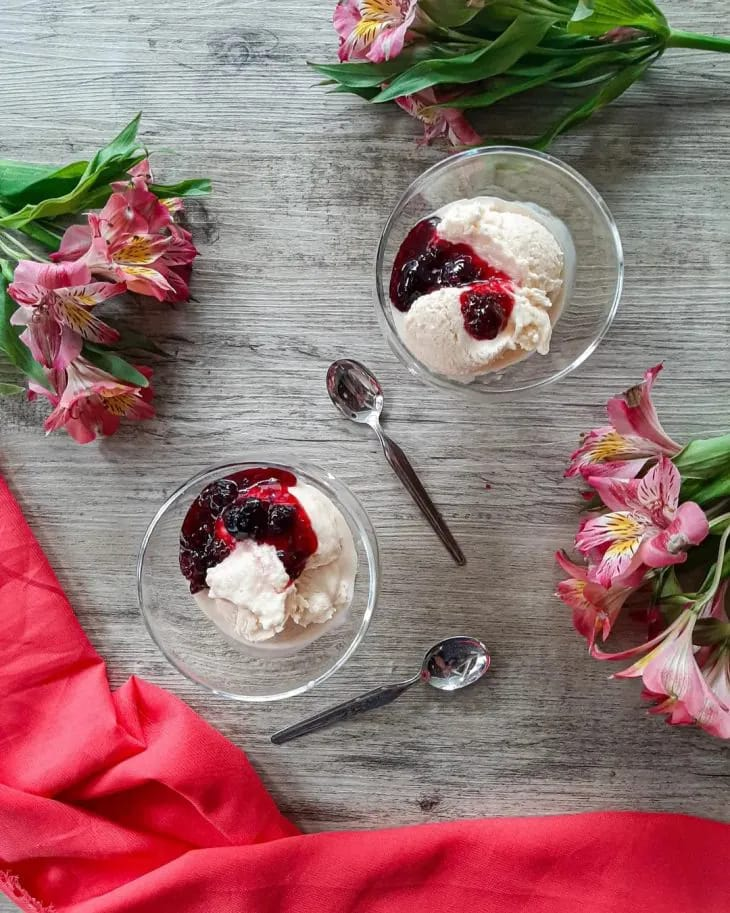

-
Espetinho de frutas

Ingredientes
50 gramas de chocolate ao leite, 500 gramas de chocolate meio amargo, 1 maçã lavada e sem casca, Gotas de 1 limão, 1/2 abacaxi cortado em cubos grandes, 10 uvas tipo do itália lavadas, 10 morangos lavados.
-
Torta gelada de panetone

Ingredientes para a massa
1 panetone de 500 gramas (ou chocotone), 100 gramas de manteiga em ponto de pomada (ou margarina).
Ingredientes para o creme
200 ml de chantilly (bem gelado), 400 gramas de doce de leite, 50 gramas de manteiga (ou margarina), 1/3 de um panetone de 500 gramas (ou chocotone).
Ingredientes para a cobertura
Doce de leite, Raspas de chocolate.
-
Frozen de iogurte com frutas vermelhas
Ingredientes
2 potes de iogurte natural, 1 e 1/2 xícara de chá de açúcar, 1 lata de creme de leite, Raspas de limão, 1 xícara de chá de frutas vermelhas.